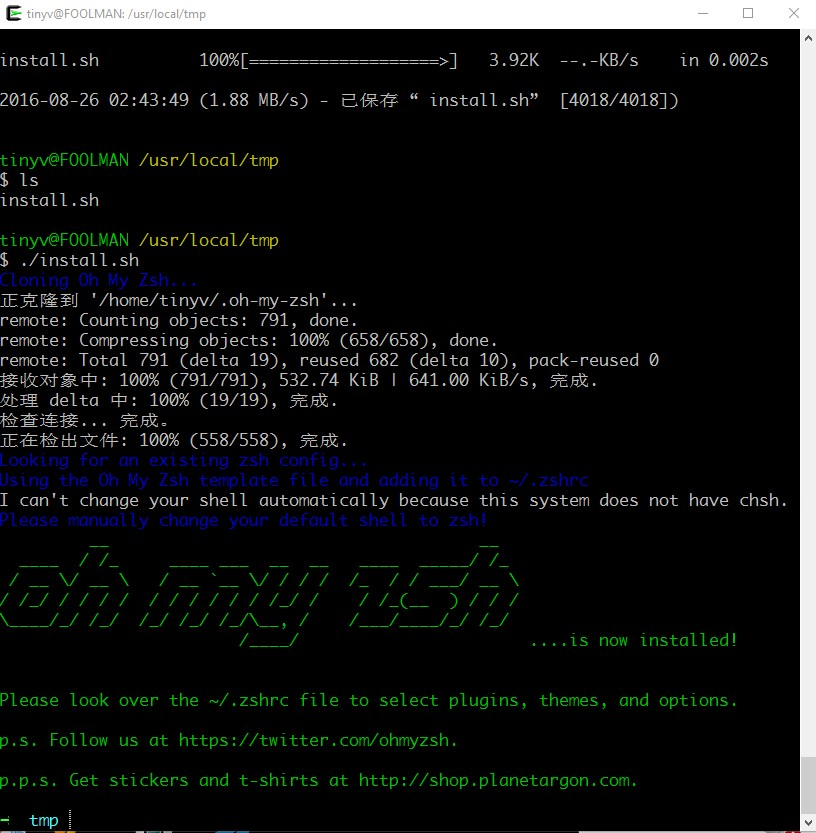

<!DOCTYPE html>
<html>
<head><meta name="generator" content="Hexo 3.9.0">
    <meta charset="utf-8">

    

    
    <title>cygwin在windows上的初体验 | 无聊小博</title>
    
    <meta name="viewport" content="width=device-width, initial-scale=1, maximum-scale=1">
    
        <meta name="keywords" content="linux,windows,shell,cygwin">
    
    <meta name="description" content="文章更新 20160826-初次成文 20160928-更新了cygwin的坑 20170313-更新了git的更新内容  为什么会有这篇文章之前用过BABUN，也用过GIT+NODE.JS的组合来使用GIT，都不是特别满意，发现很多人都推荐在Windows上使用cygwin来获得linux体验。PS:不小心改动cygwin下的text编码，导致github上的文件名全部乱码了，所以就卸载了cyg">
<meta name="keywords" content="linux,windows,shell,cygwin">
<meta property="og:type" content="article">
<meta property="og:title" content="cygwin在windows上的初体验">
<meta property="og:url" content="http://www.wuliaole.com/post/use_cygwin_as_linux_shell_on_windows_10/index.html">
<meta property="og:site_name" content="无聊小博">
<meta property="og:description" content="文章更新 20160826-初次成文 20160928-更新了cygwin的坑 20170313-更新了git的更新内容  为什么会有这篇文章之前用过BABUN，也用过GIT+NODE.JS的组合来使用GIT，都不是特别满意，发现很多人都推荐在Windows上使用cygwin来获得linux体验。PS:不小心改动cygwin下的text编码，导致github上的文件名全部乱码了，所以就卸载了cyg">
<meta property="og:locale" content="zh-Hans">
<meta property="og:image" content="http://www.wuliaole.com/post/use_cygwin_as_linux_shell_on_windows_10/ohmyzsh.jpg">
<meta property="og:updated_time" content="2018-10-11T15:31:02.000Z">
<meta name="twitter:card" content="summary">
<meta name="twitter:title" content="cygwin在windows上的初体验">
<meta name="twitter:description" content="文章更新 20160826-初次成文 20160928-更新了cygwin的坑 20170313-更新了git的更新内容  为什么会有这篇文章之前用过BABUN，也用过GIT+NODE.JS的组合来使用GIT，都不是特别满意，发现很多人都推荐在Windows上使用cygwin来获得linux体验。PS:不小心改动cygwin下的text编码，导致github上的文件名全部乱码了，所以就卸载了cyg">
<meta name="twitter:image" content="http://www.wuliaole.com/post/use_cygwin_as_linux_shell_on_windows_10/ohmyzsh.jpg">
    

    
        <link rel="alternate" href="/" title="无聊小博" type="application/atom+xml">
    

    

    <link rel="stylesheet" href="../../libs/font-awesome/css/font-awesome.min.css">
    <link rel="stylesheet" href="../../libs/titillium-web/styles.css">
    <link rel="stylesheet" href="../../libs/source-code-pro/styles.css">

    <link rel="stylesheet" href="../../css/style.css">

    <script src="../../libs/jquery/3.3.1/jquery.min.js"></script>
    
    
        <link rel="stylesheet" href="../../libs/lightgallery/css/lightgallery.min.css">
    
    
        <link rel="stylesheet" href="../../libs/justified-gallery/justifiedGallery.min.css">
    
    
        <script type="text/javascript">
(function(i,s,o,g,r,a,m) {i['GoogleAnalyticsObject']=r;i[r]=i[r]||function() {
(i[r].q=i[r].q||[]).push(arguments)},i[r].l=1*new Date();a=s.createElement(o),
m=s.getElementsByTagName(o)[0];a.async=1;a.src=g;m.parentNode.insertBefore(a,m)
})(window,document,'script','//www.google-analytics.com/analytics.js','ga');

ga('create', 'UA-144170558-1', 'auto');
ga('send', 'pageview');

</script>

    
    
        <script>
var _hmt = _hmt || [];
(function() {
  var hm = document.createElement("script");
  hm.src = "//hm.baidu.com/hm.js?0b9af06e21a88c60dc3deb5b699a3e63";
  var s = document.getElementsByTagName("script")[0];
  s.parentNode.insertBefore(hm, s);
})();
</script>

    


</head>
</html>
<body>
    <div id="wrap">
        <header id="header">
    <div id="header-outer" class="outer">
        <div class="container">
            <div class="container-inner">
                <div id="header-title">
                    <h1 class="logo-wrap">
                        <a href="../../index.html" class="logo"></a>
                    </h1>
                    
                        <h2 class="subtitle-wrap">
                            <p class="subtitle">Keep studying</p>
                        </h2>
                    
                </div>
                <div id="header-inner" class="nav-container">
                    <a id="main-nav-toggle" class="nav-icon fa fa-bars"></a>
                    <div class="nav-container-inner">
                        <ul id="main-nav">
                            
                                <li class="main-nav-list-item" >
                                    <a class="main-nav-list-link" href="../../index.html">Inici</a>
                                </li>
                            
                                        <ul class="main-nav-list"><li class="main-nav-list-item"><a class="main-nav-list-link" href="../../categories/CentOS/">CentOS</a></li><li class="main-nav-list-item"><a class="main-nav-list-link" href="../../categories/Hexo/">Hexo</a><ul class="main-nav-list-child"><li class="main-nav-list-item"><a class="main-nav-list-link" href="../../categories/Hexo/基础/">基础</a></li></ul></li><li class="main-nav-list-item"><a class="main-nav-list-link" href="../../categories/Linux/">Linux</a></li><li class="main-nav-list-item"><a class="main-nav-list-link" href="../../categories/MacOS/">MacOS</a></li><li class="main-nav-list-item"><a class="main-nav-list-link" href="../../categories/折腾/">折腾</a></li><li class="main-nav-list-item"><a class="main-nav-list-link" href="../../categories/效率/">效率</a></li><li class="main-nav-list-item"><a class="main-nav-list-link" href="../../categories/日常使用/">日常使用</a></li><li class="main-nav-list-item"><a class="main-nav-list-link" href="../../categories/raspberry/">树莓派</a><ul class="main-nav-list-child"><li class="main-nav-list-item"><a class="main-nav-list-link" href="../../categories/raspberry/入门/">入门</a></li></ul></li><li class="main-nav-list-item"><a class="main-nav-list-link" href="../../categories/编程/">编程</a></li></ul>
                                    
                                <li class="main-nav-list-item" >
                                    <a class="main-nav-list-link" href="../../about/index.html">Quant a</a>
                                </li>
                            
                        </ul>
                        <nav id="sub-nav">
                            <div id="search-form-wrap">

    <form class="search-form">
        <input type="text" class="ins-search-input search-form-input" placeholder="Cercar" />
        <button type="submit" class="search-form-submit"></button>
    </form>
    <div class="ins-search">
    <div class="ins-search-mask"></div>
    <div class="ins-search-container">
        <div class="ins-input-wrapper">
            <input type="text" class="ins-search-input" placeholder="Type something..." />
            <span class="ins-close ins-selectable"><i class="fa fa-times-circle"></i></span>
        </div>
        <div class="ins-section-wrapper">
            <div class="ins-section-container"></div>
        </div>
    </div>
</div>
<script>
(function (window) {
    var INSIGHT_CONFIG = {
        TRANSLATION: {
            POSTS: 'Posts',
            PAGES: 'Pages',
            CATEGORIES: 'categories',
            TAGS: 'etiquetes',
            UNTITLED: '(Untitled)',
        },
        ROOT_URL: '/',
        CONTENT_URL: '../../content.json',
    };
    window.INSIGHT_CONFIG = INSIGHT_CONFIG;
})(window);
</script>
<script src="../../js/insight.js"></script>

</div>
                        </nav>
                    </div>
                </div>
            </div>
        </div>
    </div>
</header>
        <div class="container">
            <div class="main-body container-inner">
                <div class="main-body-inner">
                    <section id="main">
                        <div class="main-body-header">
    <h1 class="header">
    
    <a class="page-title-link" href="../../categories/折腾/">折腾</a>
    </h1>
</div>

                        <div class="main-body-content">
                            <article id="post-20160825-cygwin在windows上的初体验" class="article article-single article-type-post" itemscope itemprop="blogPost">
    <div class="article-inner">
        
            <header class="article-header">
                
    
        <h1 class="article-title" itemprop="name">
        cygwin在windows上的初体验
        </h1>
    

            </header>
        
        
            <div class="article-meta">
                
    <div class="article-date">
        <a href="" class="article-date">
            <time datetime="2016-08-25T18:14:37.000Z" itemprop="datePublished">2016-08-26</time>
        </a>
    </div>

		

                
    <div class="article-tag">
        <i class="fa fa-tag"></i>
        <a class="tag-link" href="../../tags/cygwin/">cygwin</a>, <a class="tag-link" href="../../tags/linux/">linux</a>, <a class="tag-link" href="../../tags/shell/">shell</a>, <a class="tag-link" href="../../tags/windows/">windows</a>
    </div>

            </div>
        
        
        <div class="article-entry" itemprop="articleBody">
            <h2 id="文章更新"><a href="#文章更新" class="headerlink" title="文章更新"></a>文章更新</h2><ol>
<li>20160826-初次成文</li>
<li>20160928-更新了cygwin的坑</li>
<li>20170313-更新了git的更新内容</li>
</ol>
<h2 id="为什么会有这篇文章"><a href="#为什么会有这篇文章" class="headerlink" title="为什么会有这篇文章"></a>为什么会有这篇文章</h2><p>之前用过BABUN，也用过GIT+NODE.JS的组合来使用GIT，都不是特别满意，发现很多人都推荐在Windows上使用cygwin来获得linux体验。PS:不小心改动cygwin下的text编码，导致github上的文件名全部乱码了，所以就卸载了cygwin, git for windows还有node.js等等一系列东西，全部重装一次，记录一下。<a id="more"></a></p>
<h2 id="如何安装cygwin"><a href="#如何安装cygwin" class="headerlink" title="如何安装cygwin"></a>如何安装cygwin</h2><p>在安装之前，网上查了一下cygwin和msysmin？的区别，还是选用了cygwin，一个是之前用的就是这个程序，另外一个是这个比msysmin要好一些？程序的下载<a href="https://www.cygwin.com/" target="_blank" rel="noopener">地址</a>。</p>
<p>值得一说的就是cygwin的package的安装方式，全部依靠setup.exe来完成，不过初次安装的时候，建议带着<code>git</code>, <code>wget</code>和<code>vim</code>。</p>
<blockquote>
<p>我的cygwin自带的git版本是2.8，此时<a href="https://git-scm.com/" target="_blank" rel="noopener">官方git</a>的版本是2.12.0，如果大家想升级cygwin下的git，需要手动编译升级，可以参考这篇<a href="http://www.gizmoplex.com/wordpress/upgrade-git-to-latest-stable-release-in-cygwin/" target="_blank" rel="noopener">文章</a>。</p>
</blockquote>
<h2 id="cygwin下的git设置"><a href="#cygwin下的git设置" class="headerlink" title="cygwin下的git设置"></a>cygwin下的git设置</h2><p>JiangXin的这篇<a href="http://www.worldhello.net/gotgit/01-meet-git/050-install-on-windows-cygwin.html" target="_blank" rel="noopener">文章</a>，对cygwin以及git设置讲解的比较实用，大家可以参考一下。我从里面摘录了几个：</p>
<ol>
<li><p>设置用户主目录，修改Cygwin启动的批处理文件（如：C:\cygwin\Cygwin.bat），在批处理的开头添加如下的一行，就可以清除其他软件为Windows引入的HOME环境变量。</p>
 <figure class="highlight bash"><table><tr><td class="gutter"><pre><span class="line">1</span><br></pre></td><td class="code"><pre><span class="line"><span class="built_in">set</span> HOME=</span><br></pre></td></tr></table></figure>
</li>
<li><p>忽略文件权限的可执行位</p>
 <figure class="highlight bash"><table><tr><td class="gutter"><pre><span class="line">1</span><br></pre></td><td class="code"><pre><span class="line">git config --system core.fileMode <span class="literal">false</span></span><br></pre></td></tr></table></figure>
</li>
<li><p>支持中文</p>
 <figure class="highlight bash"><table><tr><td class="gutter"><pre><span class="line">1</span><br></pre></td><td class="code"><pre><span class="line">git config --global core.quotepath <span class="literal">false</span></span><br></pre></td></tr></table></figure>

</li>
</ol>
<h2 id="安装node-js"><a href="#安装node-js" class="headerlink" title="安装node.js"></a>安装node.js</h2><p>因为我装cygwin目的之一是为了hexo，所以当我发现在hexo目录下，实用hexo new命令说找不到，发现缺少node和npm，网上google了一番，没啥说的，也不指望原生编译安装了， 直接去官网下了一个LTS版本，也没有网上说的需要手动添加环境变量的问题，装好了，重开一个cygwin窗口，搞定了。</p>
<h2 id="如何用命令管理package"><a href="#如何用命令管理package" class="headerlink" title="如何用命令管理package"></a>如何用命令管理package</h2><p>推荐apt-cyg来管理，命令也比较简单（这里至少需要wget或者lynx）</p>
<figure class="highlight bash"><table><tr><td class="gutter"><pre><span class="line">1</span><br><span class="line">2</span><br><span class="line">3</span><br><span class="line">4</span><br></pre></td><td class="code"><pre><span class="line">wget rawgit.com/transcode-open/apt-cyg/master/apt-cyg</span><br><span class="line">chmod +x apt-cyg</span><br><span class="line">mv apt-cyg /usr/<span class="built_in">local</span>/bin/</span><br><span class="line">apt-cyg install vim</span><br></pre></td></tr></table></figure>

<p>或者</p>
<figure class="highlight bash"><table><tr><td class="gutter"><pre><span class="line">1</span><br><span class="line">2</span><br><span class="line">3</span><br></pre></td><td class="code"><pre><span class="line">lynx -<span class="built_in">source</span> rawgit.com/transcode-open/apt-cyg/master/apt-cyg &gt; apt-cyg</span><br><span class="line">install apt-cyg /bin</span><br><span class="line">apt-cyg install vim</span><br></pre></td></tr></table></figure>

<p>上面两种方式都可以。我发现如果直接在shell下运行 <code>apt-cyg</code> 命令是不行的，必须用</p>
<p><code>/bin/apt-cyg install vim</code> 的形式，说明cygwin下的PATH应该是缺少<code>/bin</code>目录，果然通过运行 <code>echo $path</code>，返回结果为空。</p>
<h3 id="apt-cyg的参数"><a href="#apt-cyg的参数" class="headerlink" title="apt-cyg的参数"></a>apt-cyg的参数</h3><p>具体可以参考他的github官方<a href="https://github.com/transcode-open/apt-cyg" target="_blank" rel="noopener">说明</a></p>
<p>这里大概总结一下</p>
<ul>
<li>install 安装package(s).</li>
<li>remove 删除某个package</li>
<li>update 升级setup.ini文件中所有package到最新版本。服务器地址由setup.rc定义。</li>
<li>download 下载package，但是并不安装，也不升级。</li>
<li>show 显示某个package的信息</li>
<li>depends 生成某个package的依赖包信息</li>
<li>rdepends 以树形式，生成某个package的依赖包信息</li>
<li>list 可以通过正则表达匹配列出符合的package，如果直接list，则列出所有安装的package信息</li>
<li>listall 列出所有package.</li>
<li>category 根据目录名称列出所有下面的package</li>
<li>listfiles 列出某个package的所有文件。可以给出多个package的名字。</li>
<li>search 搜索某个package</li>
<li>searchall 从cygwin.com提取某个package的包信息</li>
</ul>
<h2 id="安装oh-my-zsh"><a href="#安装oh-my-zsh" class="headerlink" title="安装oh-my-zsh"></a>安装oh-my-zsh</h2><figure class="highlight bash"><table><tr><td class="gutter"><pre><span class="line">1</span><br></pre></td><td class="code"><pre><span class="line">apt-cyg install zsh curl git</span><br></pre></td></tr></table></figure>

<p>为了zsh准备的三个package，如果你在安装cygwin的时候已经默认安装了这些，上面的命令可以忽略。</p>
<figure class="highlight bash"><table><tr><td class="gutter"><pre><span class="line">1</span><br></pre></td><td class="code"><pre><span class="line">sh -c <span class="string">"<span class="variable">$(curl -fsSL https://raw.github.com/robbyrussell/oh-my-zsh/master/tools/install.sh)</span>"</span></span><br></pre></td></tr></table></figure>

<p>遇到了错误</p>
<figure class="highlight accesslog"><table><tr><td class="gutter"><pre><span class="line">1</span><br></pre></td><td class="code"><pre><span class="line">C:/cygwin64/bin/curl.exe: error while loading shared libraries: cygmetalink-<span class="number">3</span>.dll: cannot open shared object file: No such file or directory</span><br></pre></td></tr></table></figure>

<p>说明curl少一个文件，这里可以用一个比较有用的命令 <code>cygcheck</code>，来了解curl到底缺少了什么文件。</p>
<figure class="highlight bash"><table><tr><td class="gutter"><pre><span class="line">1</span><br></pre></td><td class="code"><pre><span class="line">cygcheck /usr/bin/curl <span class="comment">#路径换成/bin/curl也可以</span></span><br></pre></td></tr></table></figure>

<p>结果发现是 <code>cygmetalink-3.dll</code>，这个文件，GOOGLE了一下，发现网易的镜像有这个文件，地址在<a href="http://mirrors.163.com/cygwin/x86/release/libmetalink/libmetalink3/" target="_blank" rel="noopener">这里</a></p>
<figure class="highlight bash"><table><tr><td class="gutter"><pre><span class="line">1</span><br><span class="line">2</span><br><span class="line">3</span><br><span class="line">4</span><br><span class="line">5</span><br></pre></td><td class="code"><pre><span class="line">mkdir /usr/<span class="built_in">local</span>/tmp</span><br><span class="line"><span class="built_in">cd</span> /usr/<span class="built_in">local</span>/tmp</span><br><span class="line">wget http://mirrors.163.com/cygwin/x86/release/libmetalink/libmetalink3/libmetalink3-0.1.2-1.tar.bz2</span><br><span class="line">tar -xf libmetalink3-0.1.2-1.tar.bz2</span><br><span class="line">mv /usr/<span class="built_in">local</span>/tmp/usr/bin/cygmetalink-3.dll /bin</span><br></pre></td></tr></table></figure>

<p>好了，再次运行<code>sh -c &quot;$(curl -fsSL https://raw.github.com/robbyrussell/oh-my-zsh/master/tools/install.sh)&quot;</code></p>
<p>估计是因为环境PATH的设置问题，上面这条没有任何回应，好了，死马当活马医，把命令拆了</p>
<figure class="highlight bash"><table><tr><td class="gutter"><pre><span class="line">1</span><br><span class="line">2</span><br><span class="line">3</span><br></pre></td><td class="code"><pre><span class="line"><span class="built_in">cd</span> ~</span><br><span class="line">wget https://raw.githubusercontent.com/robbyrussell/oh-my-zsh/master/tools/install.sh -O .</span><br><span class="line">./install.sh</span><br></pre></td></tr></table></figure>

<p>这样有点费劲，把一句拆成了3句，不过成功了，见下图。</p>
<p></p>
<h2 id="直接打开cygwin进入zsh"><a href="#直接打开cygwin进入zsh" class="headerlink" title="直接打开cygwin进入zsh"></a>直接打开cygwin进入zsh</h2><p>直接执行命令 zsh，就会从bash切换到 oh-my-zsh 。</p>
<p>但当我们开启第二个 Cygwin 窗口或者重启 Cygwin 的时候，默认使用的依然是 bash。那怎么样才能默认就使用 zsh 呢？</p>
<p>有两个方法可以做到：</p>
<ol>
<li><p>在 <code>.bashrc</code> 文件最后添加代码 <code>exec /bin/zsh</code>，让 zsh 来替代 bash，就跟刚才我们直接执行 zsh 的操作一样</p>
</li>
<li><p>右键点击 Cygwin 启动图标查看属性，更改其目标为 <code>c:\cygwin64\bin\mintty.exe /bin/zsh -l</code>(具体路径要根据你自己的情况)。当然其中的路径需要修改成 Cygwin 的安装路径。</p>
</li>
</ol>
<p>这样在 Windows 下就可以爽快得使用 oh-my-zsh 了。</p>
<p>注意在安装 zsh 之后，cygwin 的 bin 目录下会多一个 mkzsh 脚本。执行此脚本会在 Cygwin 的安装根目录下生成一个 zsh.bat 文件。执行此文件也可以使用带 zsh 登录的命令行界面。只不过……这个脚本开启的是 Windows 的 cmd.exe……比起 Mintty 的界面丑多了……所以还是推荐使用之前说的第二种方法。</p>
<h2 id="添加一些别名"><a href="#添加一些别名" class="headerlink" title="添加一些别名"></a>添加一些别名</h2><p>因为我喜欢VIM和SUBLIME两个结合着使用，所以我在.zshrc里面添加了subl作为sublime text 3的别名，其实也很简单，但是路径写起来比较费劲，所以这里留个参考</p>
<figure class="highlight plain"><table><tr><td class="gutter"><pre><span class="line">1</span><br></pre></td><td class="code"><pre><span class="line">alias subl=&quot;C:/Program\ Files/Sublime\ Text\ 3/sublime_text.exe&quot;</span><br></pre></td></tr></table></figure>

<h2 id="一些需要习惯的用法"><a href="#一些需要习惯的用法" class="headerlink" title="一些需要习惯的用法"></a>一些需要习惯的用法</h2><ol>
<li><p>更强大的tab补全，当你切换目录敲两下tab，他可以列出当前目录下面的所有目录，并且可以使用键盘上下左右键来选择要进入的目录。</p>
</li>
<li><p>更智能的切换目录，比如你要进入一个很深的目录，like this /var/log/nginx/error/lastyear/may/first/monday, 用zsh可以这样输入cd /v/l/n/e/l/m/f/m，然后按tab即可补全整个路径。或者你实现知道当前目录名称，可以直接输入目录，即可进去目录。bash下cd - 可以切换到刚才进入的目录，在zsh下可以记录最近进去过的10个目录，只需要输入d,然后看到对应的0-9的目录，输入对应的数字，即可进入对应的目录（感谢 @JayXon 的提示）。或者直接输入cd -然他后TAB一下，你会发现有最近使用过的31个目录等候你选择。</p>
</li>
<li><p>命令选项补齐，比如输入docker，然后按tab，即可显示出docker都有哪些命令选项。</p>
</li>
<li><p>命令参数补齐，比如要kill一个进程，直接输入kill 进程名，会自动显示出进程的process id，<br>如果用ssh，则会输出最近用ssh 连接过的主机名，配合.zshrc还可以实现自定义ping命令自动补齐的命令参数。<br>zstyle ‘:completion:<em>:ping:</em>‘ hosts 192.168.1.{1,50,51,100,101} <a href="http://www.google.com" target="_blank" rel="noopener">www.google.com</a></p>
</li>
<li><p>大小写字母自动更正，比如我们要cat一下README.txt，直接输入cat readme.txt TAB,之后zsh就会把小写的readme改成大写的。</p>
</li>
<li><p>有着丰富多彩的主题，如果你使用我的脚本安装oh-my-zsh的项目的话，在<del>/.oh-my-zsh/themes里会找到多达142个主题，看中哪个主题直接在</del>/.zshrc 里面更改.</p>
</li>
<li><p>更强大的alias命令,比如下面命令，当你在zsh环境下输入hello.py即可直接用vim打开文件编辑，一个tgz的文件即可自动解压缩。</p>
 <figure class="highlight plain"><table><tr><td class="gutter"><pre><span class="line">1</span><br><span class="line">2</span><br><span class="line">3</span><br></pre></td><td class="code"><pre><span class="line">alias -s py=vim</span><br><span class="line">alias -s html=vim</span><br><span class="line">alias -s tgz=&apos;tar zxvf&apos;</span><br></pre></td></tr></table></figure>
</li>
<li><p>智能命令错误纠正，比如输入apt-gte install somefile,回车后，zsh会提示你是否纠正apt-gte 为apt-get?输入y，后即是正确命令执行。在配合一下zshrc的profile的sudo命令设置，按两下ESC，即可在命令的前面自动加上sudo。</p>
 <figure class="highlight bash"><table><tr><td class="gutter"><pre><span class="line">1</span><br><span class="line">2</span><br><span class="line">3</span><br><span class="line">4</span><br><span class="line">5</span><br><span class="line">6</span><br><span class="line">7</span><br><span class="line">8</span><br><span class="line">9</span><br><span class="line">10</span><br><span class="line">11</span><br></pre></td><td class="code"><pre><span class="line"><span class="comment">##在命令前插入 sudo &#123;&#123;&#123;</span></span><br><span class="line"><span class="comment">#定义功能</span></span><br><span class="line">sudo-command-<span class="function"><span class="title">line</span></span>() &#123;</span><br><span class="line">    [[ -z <span class="variable">$BUFFER</span> ]] &amp;&amp; <span class="built_in">zle</span> up-history</span><br><span class="line">    [[ <span class="variable">$BUFFER</span> != sudo\ * ]] &amp;&amp; BUFFER=<span class="string">"sudo <span class="variable">$BUFFER</span>"</span></span><br><span class="line">    <span class="built_in">zle</span> end-of-line <span class="comment">#光标移动到行末</span></span><br><span class="line">&#125;</span><br><span class="line"><span class="built_in">zle</span> -N sudo-command-line</span><br><span class="line"><span class="comment">#定义快捷键为： [Esc] [Esc]</span></span><br><span class="line"><span class="built_in">bindkey</span> <span class="string">"\e\e"</span> sudo-command-line</span><br><span class="line"><span class="comment">#&#125;&#125;&#125;</span></span><br></pre></td></tr></table></figure>
</li>
<li><p>最最强大的优点是可以集成各种类型的插件，比如切换目录的可以继承autojump,想跳转到哪里，直接j 加目录名称，真的非常强大，非常便利，这个bash也可以使用。比如想要去nginx目录，可以直接输入j nginx，他会搜索使用率最高的nginx的路径，如果想要去/var/log/下的nginx呢，直接输入j v ng</p>
</li>
</ol>
<h2 id="在cygwin上安装hexo"><a href="#在cygwin上安装hexo" class="headerlink" title="在cygwin上安装hexo"></a>在cygwin上安装hexo</h2><p>npm就不要纠结是否用apt-cyg安装了，直接去node.js的<a href="https://nodejs.org/en/download/" target="_blank" rel="noopener">官网</a>下载windows 64位版本安装，node.js自带npm，安装后就可以在cygwin下使用npm了。</p>
<p>三句话</p>
<figure class="highlight bash"><table><tr><td class="gutter"><pre><span class="line">1</span><br><span class="line">2</span><br><span class="line">3</span><br></pre></td><td class="code"><pre><span class="line">npm install -g hexo-cli</span><br><span class="line">npm install Hexo-deployer-git --save </span><br><span class="line">npm install hexo-asset-image --save</span><br></pre></td></tr></table></figure>

<p>然后就可以继续写文章了。</p>
<h2 id="cygwin文件权限的坑坑洼洼"><a href="#cygwin文件权限的坑坑洼洼" class="headerlink" title="cygwin文件权限的坑坑洼洼"></a>cygwin文件权限的坑坑洼洼</h2><p>这个问题也是最近才发现的，在cygwin下创建的文件，无法在vscode中打开，甚至用cd命令都进不去建立的文件夹。需要的，给cygwin的运行程序建立快捷方式，然后勾选“使用管理员权限运行程序”，这是第一步。</p>
<p>cygwin将Windows系统的文件权限实现成POSIX的文件权限，而POSIX文件是以ACL来管理文件权限的。POSIX的文件、目录权限是被mount选项来控制的，默认设置为acl。这样做，会导致Windows系统中应用程序的文件权限产生混乱，为了解决这个问题，需要添加noacl参数，将/etc/fatab改为：</p>
<figure class="highlight plain"><table><tr><td class="gutter"><pre><span class="line">1</span><br></pre></td><td class="code"><pre><span class="line">none /cygdrive cygdrive binary,user,noacl,posix=000</span><br></pre></td></tr></table></figure>

<p>但是上面的改动仅仅是修改了<code>/cygdrive</code>目录，也就是windows系统中的所有的磁盘（C:、D:、E:、F:等），而cygwin本身的<code>/</code>并未修改，同样会存在上述的权限问题，因此需要一并修改，最终完整的<code>/etc/fatab</code>文件内容如下：</p>
<figure class="highlight plain"><table><tr><td class="gutter"><pre><span class="line">1</span><br><span class="line">2</span><br><span class="line">3</span><br><span class="line">4</span><br></pre></td><td class="code"><pre><span class="line">none /cygdrive cygdrive binary,user,noacl,posix=000</span><br><span class="line">C:\cygwin64 / ntfs binary,noacl,override00</span><br><span class="line">C:\cygwin64\bin/usr/bin ntfs binary,noacl,override00</span><br><span class="line">C:\cygwin64\lib /usr/lib ntfs binary,noacl,override00</span><br></pre></td></tr></table></figure>

<p>这样设置后，无论是mkdir还是ls或者cd，都可以正常执行了，但是还有一个问题，就是这样建立之后的目录，进入之后，无法启动windows的原生二进制程序，比如笔者通过alias设置的vscode，就无法在新建的目录中启动，但是其他目录是可以的。错误提示如下</p>
<figure class="highlight accesslog"><table><tr><td class="gutter"><pre><span class="line">1</span><br><span class="line">2</span><br><span class="line">3</span><br></pre></td><td class="code"><pre><span class="line">Error: Current working directory has restricted permissions which render it</span><br><span class="line">inaccessible as Win32 working directory.</span><br><span class="line">Can't start native Windows application from here.</span><br></pre></td></tr></table></figure>

<p>虽然可以通过在上层目录运行，然后再切换到新建的目录下，毕竟很不方便，经过测试，发现上面这样更改后，mkdir后的文件夹(注意一定要关闭cygwin所有终端之后，重启cygwin才可以)，可以直接运行比如vscode这样的程序，但是之前旧时建立的文件夹则不行，通过查看windows的目录权限，发现新旧两个文件夹主要的区别就是windows账户登录的账户名，是否拥有完全的控制权限。而一旦更改的话，则会遇到<code>Failed to enumerate objects in the container.</code>的错误，就是<code>无法枚举容器中的对象,访问被拒绝</code>这个错误，网上也没有找到特别好的解决办法，所以我就暂时不想解决了，直接新建了个目录，把文件复制过去了。</p>
<figure class="highlight bash"><table><tr><td class="gutter"><pre><span class="line">1</span><br><span class="line">2</span><br><span class="line">3</span><br></pre></td><td class="code"><pre><span class="line">mv ./dir1/* ./dir2</span><br><span class="line">rmdir ./dir1</span><br><span class="line">mv dir2 dir1</span><br></pre></td></tr></table></figure>

<p>这个算是权宜之计吧。因为dir1目录已经无法操作了，应该是之前cygwin留下的后遗症，只能把里面的文件暂时搞到其他地方去了。</p>
<p>如果有哪位同学了解cygwin和windows文件系统权限冲突的解决办法，或者可以稍微解释下这个文件，请尽管赐教，在这里先谢谢了。</p>
<h2 id="其他唠叨几句"><a href="#其他唠叨几句" class="headerlink" title="其他唠叨几句"></a>其他唠叨几句</h2><p>卸载cygwin的方法，如果你是删掉了整个cygwin64的目录，那么你的个人root主目录也会一起没了，里面的.ssh目录下的文件，也一起没了啊，这个请一定要注意-_-!!!</p>
<h2 id="参考文章"><a href="#参考文章" class="headerlink" title="参考文章"></a>参考文章</h2><ol>
<li><a href="http://www.chrisyue.com/install-oh-my-zsh-on-cygwin.html" target="_blank" rel="noopener">Cygwin 上安装 Oh-My-Zsh</a></li>
<li><a href="https://www.zhihu.com/question/29977255" target="_blank" rel="noopener">mac 装了 oh my zsh 后比用 bash 具体好在哪儿？</a></li>
<li><a href="http://yuanhuan.blog.51cto.com/3367116/1659256" target="_blank" rel="noopener">cygwin的坑坑洼洼</a></li>
<li><a href="http://www.worldhello.net/gotgit/01-meet-git/050-install-on-windows-cygwin.html" target="_blank" rel="noopener">Windows下安装和使用Git（Cygwin篇）</a></li>
</ol>

        </div>
        <footer class="article-footer">
            


    <a data-url="http://www.wuliaole.com/post/use_cygwin_as_linux_shell_on_windows_10/" data-id="cjyw535c800jq1gok1hapotm3" class="article-share-link"><i class="fa fa-share"></i>Compartir</a>
<script>
    (function ($) {
        $('body').on('click', function() {
            $('.article-share-box.on').removeClass('on');
        }).on('click', '.article-share-link', function(e) {
            e.stopPropagation();

            var $this = $(this),
                url = $this.attr('data-url'),
                encodedUrl = encodeURIComponent(url),
                id = 'article-share-box-' + $this.attr('data-id'),
                offset = $this.offset(),
                box;

            if ($('#' + id).length) {
                box = $('#' + id);

                if (box.hasClass('on')){
                    box.removeClass('on');
                    return;
                }
            } else {
                var html = [
                    '<div id="' + id + '" class="article-share-box">',
                        '<input class="article-share-input" value="' + url + '">',
                        '<div class="article-share-links">',
                            '<a href="https://twitter.com/intent/tweet?url=' + encodedUrl + '" class="article-share-twitter" target="_blank" title="Twitter"></a>',
                            '<a href="https://www.facebook.com/sharer.php?u=' + encodedUrl + '" class="article-share-facebook" target="_blank" title="Facebook"></a>',
                            '<a href="http://pinterest.com/pin/create/button/?url=' + encodedUrl + '" class="article-share-pinterest" target="_blank" title="Pinterest"></a>',
                            '<a href="https://plus.google.com/share?url=' + encodedUrl + '" class="article-share-google" target="_blank" title="Google+"></a>',
                        '</div>',
                    '</div>'
                ].join('');

              box = $(html);

              $('body').append(box);
            }

            $('.article-share-box.on').hide();

            box.css({
                top: offset.top + 25,
                left: offset.left
            }).addClass('on');

        }).on('click', '.article-share-box', function (e) {
            e.stopPropagation();
        }).on('click', '.article-share-box-input', function () {
            $(this).select();
        }).on('click', '.article-share-box-link', function (e) {
            e.preventDefault();
            e.stopPropagation();

            window.open(this.href, 'article-share-box-window-' + Date.now(), 'width=500,height=450');
        });
    })(jQuery);
</script>

        </footer>
    </div>
    <script type="application/ld+json">
    {
        "@context": "https://schema.org",
        "@type": "BlogPosting",
        "author": {
            "@type": "Person",
            "name": "节约用爱"
        },
        "headline": "cygwin在windows上的初体验",
        "image": "http://www.wuliaole.comohmyzsh.jpg",
        "keywords": "linux windows shell cygwin",
        "genre": "折腾",
        "datePublished": "2016-08-26",
        "dateCreated": "2016-08-26",
        "dateModified": "2018-10-11",
        "url": "http://www.wuliaole.com/post/use_cygwin_as_linux_shell_on_windows_10/",
        "description": "文章更新
20160826-初次成文
20160928-更新了cygwin的坑
20170313-更新了git的更新内容

为什么会有这篇文章之前用过BABUN，也用过GIT+NODE.JS的组合来使用GIT，都不是特别满意，发现很多人都推荐在Windows上使用cygwin来获得linux体验。PS:不小心改动cygwin下的text编码，导致github上的文件名全部乱码了，所以就卸载了cygwin, git for windows还有node.js等等一系列东西，全部重装一次，记录一下。"
        "wordCount": 595
    }
</script>

</article>

    <section id="comments">
    
        
    <div id="disqus_thread">
        <noscript>Please enable JavaScript to view the <a href="//disqus.com/?ref_noscript">comments powered by Disqus.</a></noscript>
    </div>

    
    </section>


                        </div>
                    </section>
                    <aside id="sidebar">
    <a class="sidebar-toggle" title="Expand Sidebar"><i class="toggle icon"></i></a>
    <div class="sidebar-top">
        <p>seguir:</p>
        <ul class="social-links">
            
                
                <li>
                    <a class="social-tooltip" title="twitter" href="../../index.html" target="_blank" rel="noopener">
                        <i class="icon fa fa-twitter"></i>
                    </a>
                </li>
                
            
                
                <li>
                    <a class="social-tooltip" title="facebook" href="../../index.html" target="_blank" rel="noopener">
                        <i class="icon fa fa-facebook"></i>
                    </a>
                </li>
                
            
                
                <li>
                    <a class="social-tooltip" title="google-plus" href="../../index.html" target="_blank" rel="noopener">
                        <i class="icon fa fa-google-plus"></i>
                    </a>
                </li>
                
            
                
                <li>
                    <a class="social-tooltip" title="github" href="https://github.com/tinyvane" target="_blank" rel="noopener">
                        <i class="icon fa fa-github"></i>
                    </a>
                </li>
                
            
                
                <li>
                    <a class="social-tooltip" title="weibo" href="../../index.html" target="_blank" rel="noopener">
                        <i class="icon fa fa-weibo"></i>
                    </a>
                </li>
                
            
                
                <li>
                    <a class="social-tooltip" title="rss" href="../../index.html" target="_blank" rel="noopener">
                        <i class="icon fa fa-rss"></i>
                    </a>
                </li>
                
            
        </ul>
    </div>
    
        
<nav id="article-nav">
    
        <a href="../install_Xamarin_on_windows/" id="article-nav-newer" class="article-nav-link-wrap">
        <strong class="article-nav-caption">més nou</strong>
        <p class="article-nav-title">
        
            在WINDOWS平台安装Xamarin的步骤
        
        </p>
        <i class="icon fa fa-chevron-right" id="icon-chevron-right"></i>
    </a>
    
    
        <a href="../simple_comparation_and_detection_by_shell_under_linux/" id="article-nav-older" class="article-nav-link-wrap">
        <strong class="article-nav-caption">antic</strong>
        <p class="article-nav-title">Shell编程之简单的条件判断和检测</p>
        <i class="icon fa fa-chevron-left" id="icon-chevron-left"></i>
        </a>
    
</nav>

    
    <div class="widgets-container">
        
            
                

            
                
    <div class="widget-wrap">
        <h3 class="widget-title">recents</h3>
        <div class="widget">
            <ul id="recent-post" class="">
                
                    <li>
                        
                        <div class="item-thumbnail">
                            <a href="../vba_scripts_in_word/" class="thumbnail">
    
    
        <span class="thumbnail-image thumbnail-none"></span>
    
    
</a>

                        </div>
                        
                        <div class="item-inner">
                            <p class="item-category"><a class="article-category-link" href="../../categories/折腾/">折腾</a></p>
                            <p class="item-title"><a href="../vba_scripts_in_word/" class="title">WORD中的VBA操作</a></p>
                            <p class="item-date"><time datetime="2019-08-03T06:55:17.000Z" itemprop="datePublished">2019-08-03</time></p>
                        </div>
                    </li>
                
                    <li>
                        
                        <div class="item-thumbnail">
                            <a href="../how_does_office365_coexist_with_msi_visio_2016/" class="thumbnail">
    
    
        <span style="background-image:url(20190719-%E5%BE%AE%E8%BD%AF%E5%8D%B3%E7%82%B9%E5%8D%B3%E7%94%A8%E5%92%8Cmsi%E5%85%B1%E5%AD%98%E7%9A%84%E8%BD%AF%E4%BB%B6%E5%AE%89%E8%A3%85%E6%96%B9%E6%B3%95/%E5%BE%AE%E4%BF%A1%E6%88%AA%E5%9B%BE_20190804064606.png)" alt="微软即点即用和msi共存的安装方法" class="thumbnail-image"></span>
    
    
</a>

                        </div>
                        
                        <div class="item-inner">
                            <p class="item-category"><a class="article-category-link" href="../../categories/折腾/">折腾</a></p>
                            <p class="item-title"><a href="../how_does_office365_coexist_with_msi_visio_2016/" class="title">微软即点即用和msi共存的安装方法</a></p>
                            <p class="item-date"><time datetime="2019-07-19T09:13:03.000Z" itemprop="datePublished">2019-07-19</time></p>
                        </div>
                    </li>
                
                    <li>
                        
                        <div class="item-thumbnail">
                            <a href="../let_windows_mail_office_login_using_shadowsocks/" class="thumbnail">
    
    
        <span class="thumbnail-image thumbnail-none"></span>
    
    
</a>

                        </div>
                        
                        <div class="item-inner">
                            <p class="item-category"><a class="article-category-link" href="../../categories/折腾/">折腾</a></p>
                            <p class="item-title"><a href="../let_windows_mail_office_login_using_shadowsocks/" class="title">20190719-shadowsocks支持windows邮件、OFFICE登陆翻墙</a></p>
                            <p class="item-date"><time datetime="2019-07-19T05:11:23.000Z" itemprop="datePublished">2019-07-19</time></p>
                        </div>
                    </li>
                
                    <li>
                        
                        <div class="item-thumbnail">
                            <a href="../common_used_git_commands/" class="thumbnail">
    
    
        <span class="thumbnail-image thumbnail-none"></span>
    
    
</a>

                        </div>
                        
                        <div class="item-inner">
                            <p class="item-category"><a class="article-category-link" href="../../categories/折腾/">折腾</a></p>
                            <p class="item-title"><a href="../common_used_git_commands/" class="title">201907199-常用GIT命令和使用场景</a></p>
                            <p class="item-date"><time datetime="2019-07-19T04:23:57.000Z" itemprop="datePublished">2019-07-19</time></p>
                        </div>
                    </li>
                
                    <li>
                        
                        <div class="item-thumbnail">
                            <a href="../install_centos_74_php_72_and_mysql_80_on_aliyun/" class="thumbnail">
    
    
        <span class="thumbnail-image thumbnail-none"></span>
    
    
</a>

                        </div>
                        
                        <div class="item-inner">
                            <p class="item-category"><a class="article-category-link" href="../../categories/折腾/">折腾</a></p>
                            <p class="item-title"><a href="../install_centos_74_php_72_and_mysql_80_on_aliyun/" class="title">阿里云centos7.4基础</a></p>
                            <p class="item-date"><time datetime="2018-10-11T15:25:17.000Z" itemprop="datePublished">2018-10-11</time></p>
                        </div>
                    </li>
                
            </ul>
        </div>
    </div>

            
                
    <div class="widget-wrap widget-list">
        <h3 class="widget-title">categories</h3>
        <div class="widget">
            <ul class="category-list"><li class="category-list-item"><a class="category-list-link" href="../../categories/CentOS/">CentOS</a><span class="category-list-count">4</span></li><li class="category-list-item"><a class="category-list-link" href="../../categories/Hexo/">Hexo</a><span class="category-list-count">11</span><ul class="category-list-child"><li class="category-list-item"><a class="category-list-link" href="../../categories/Hexo/基础/">基础</a><span class="category-list-count">2</span></li></ul></li><li class="category-list-item"><a class="category-list-link" href="../../categories/Linux/">Linux</a><span class="category-list-count">6</span></li><li class="category-list-item"><a class="category-list-link" href="../../categories/MacOS/">MacOS</a><span class="category-list-count">3</span></li><li class="category-list-item"><a class="category-list-link" href="../../categories/折腾/">折腾</a><span class="category-list-count">63</span></li><li class="category-list-item"><a class="category-list-link" href="../../categories/效率/">效率</a><span class="category-list-count">7</span></li><li class="category-list-item"><a class="category-list-link" href="../../categories/日常使用/">日常使用</a><span class="category-list-count">1</span></li><li class="category-list-item"><a class="category-list-link" href="../../categories/raspberry/">树莓派</a><span class="category-list-count">11</span><ul class="category-list-child"><li class="category-list-item"><a class="category-list-link" href="../../categories/raspberry/入门/">入门</a><span class="category-list-count">2</span></li></ul></li><li class="category-list-item"><a class="category-list-link" href="../../categories/编程/">编程</a><span class="category-list-count">8</span></li></ul>
        </div>
    </div>


            
                
    <div class="widget-wrap widget-list">
        <h3 class="widget-title">arxius</h3>
        <div class="widget">
            <ul class="archive-list"><li class="archive-list-item"><a class="archive-list-link" href="../../archives/2019/08/">August 2019</a><span class="archive-list-count">1</span></li><li class="archive-list-item"><a class="archive-list-link" href="../../archives/2019/07/">July 2019</a><span class="archive-list-count">3</span></li><li class="archive-list-item"><a class="archive-list-link" href="../../archives/2018/10/">October 2018</a><span class="archive-list-count">3</span></li><li class="archive-list-item"><a class="archive-list-link" href="../../archives/2018/09/">September 2018</a><span class="archive-list-count">4</span></li><li class="archive-list-item"><a class="archive-list-link" href="../../archives/2018/05/">May 2018</a><span class="archive-list-count">1</span></li><li class="archive-list-item"><a class="archive-list-link" href="../../archives/2018/02/">February 2018</a><span class="archive-list-count">2</span></li><li class="archive-list-item"><a class="archive-list-link" href="../../archives/2017/08/">August 2017</a><span class="archive-list-count">4</span></li><li class="archive-list-item"><a class="archive-list-link" href="../../archives/2017/05/">May 2017</a><span class="archive-list-count">4</span></li><li class="archive-list-item"><a class="archive-list-link" href="../../archives/2017/04/">April 2017</a><span class="archive-list-count">2</span></li><li class="archive-list-item"><a class="archive-list-link" href="../../archives/2017/03/">March 2017</a><span class="archive-list-count">10</span></li><li class="archive-list-item"><a class="archive-list-link" href="../../archives/2017/02/">February 2017</a><span class="archive-list-count">3</span></li><li class="archive-list-item"><a class="archive-list-link" href="../../archives/2016/10/">October 2016</a><span class="archive-list-count">1</span></li><li class="archive-list-item"><a class="archive-list-link" href="../../archives/2016/09/">September 2016</a><span class="archive-list-count">9</span></li><li class="archive-list-item"><a class="archive-list-link" href="../../archives/2016/08/">August 2016</a><span class="archive-list-count">10</span></li><li class="archive-list-item"><a class="archive-list-link" href="../../archives/2016/07/">July 2016</a><span class="archive-list-count">16</span></li><li class="archive-list-item"><a class="archive-list-link" href="../../archives/2016/06/">June 2016</a><span class="archive-list-count">9</span></li><li class="archive-list-item"><a class="archive-list-link" href="../../archives/2016/05/">May 2016</a><span class="archive-list-count">6</span></li><li class="archive-list-item"><a class="archive-list-link" href="../../archives/2016/04/">April 2016</a><span class="archive-list-count">10</span></li><li class="archive-list-item"><a class="archive-list-link" href="../../archives/2016/03/">March 2016</a><span class="archive-list-count">5</span></li><li class="archive-list-item"><a class="archive-list-link" href="../../archives/2016/01/">January 2016</a><span class="archive-list-count">2</span></li><li class="archive-list-item"><a class="archive-list-link" href="../../archives/2015/12/">December 2015</a><span class="archive-list-count">13</span></li></ul>
        </div>
    </div>


            
                
    <div class="widget-wrap widget-list">
        <h3 class="widget-title">etiquetes</h3>
        <div class="widget">
            <ul class="tag-list"><li class="tag-list-item"><a class="tag-list-link" href="../../tags/net/">.net</a><span class="tag-list-count">3</span></li><li class="tag-list-item"><a class="tag-list-link" href="../../tags/net-core/">.net core</a><span class="tag-list-count">1</span></li><li class="tag-list-item"><a class="tag-list-link" href="../../tags/100m宽带/">100m宽带</a><span class="tag-list-count">1</span></li><li class="tag-list-item"><a class="tag-list-link" href="../../tags/3D建模/">3D建模</a><span class="tag-list-count">1</span></li><li class="tag-list-item"><a class="tag-list-link" href="../../tags/404/">404</a><span class="tag-list-count">1</span></li><li class="tag-list-item"><a class="tag-list-link" href="../../tags/C/">C#</a><span class="tag-list-count">1</span></li><li class="tag-list-item"><a class="tag-list-link" href="../../tags/FTP/">FTP</a><span class="tag-list-count">1</span></li><li class="tag-list-item"><a class="tag-list-link" href="../../tags/GPT/">GPT</a><span class="tag-list-count">1</span></li><li class="tag-list-item"><a class="tag-list-link" href="../../tags/Hexo/">Hexo</a><span class="tag-list-count">1</span></li><li class="tag-list-item"><a class="tag-list-link" href="../../tags/IMG/">IMG</a><span class="tag-list-count">1</span></li><li class="tag-list-item"><a class="tag-list-link" href="../../tags/Linux/">Linux</a><span class="tag-list-count">1</span></li><li class="tag-list-item"><a class="tag-list-link" href="../../tags/M3-bitlocker-loader/">M3 bitlocker loader</a><span class="tag-list-count">1</span></li><li class="tag-list-item"><a class="tag-list-link" href="../../tags/MAC/">MAC</a><span class="tag-list-count">2</span></li><li class="tag-list-item"><a class="tag-list-link" href="../../tags/MBR/">MBR</a><span class="tag-list-count">1</span></li><li class="tag-list-item"><a class="tag-list-link" href="../../tags/MarkDown/">MarkDown</a><span class="tag-list-count">1</span></li><li class="tag-list-item"><a class="tag-list-link" href="../../tags/OSX/">OSX</a><span class="tag-list-count">1</span></li><li class="tag-list-item"><a class="tag-list-link" href="../../tags/PC/">PC</a><span class="tag-list-count">1</span></li><li class="tag-list-item"><a class="tag-list-link" href="../../tags/PHP/">PHP</a><span class="tag-list-count">1</span></li><li class="tag-list-item"><a class="tag-list-link" href="../../tags/RASPBERRY/">RASPBERRY</a><span class="tag-list-count">1</span></li><li class="tag-list-item"><a class="tag-list-link" href="../../tags/Raspberry/">Raspberry</a><span class="tag-list-count">1</span></li><li class="tag-list-item"><a class="tag-list-link" href="../../tags/Resilio-Sync/">Resilio Sync</a><span class="tag-list-count">1</span></li><li class="tag-list-item"><a class="tag-list-link" href="../../tags/Sublime-Text-3/">Sublime Text 3</a><span class="tag-list-count">1</span></li><li class="tag-list-item"><a class="tag-list-link" href="../../tags/VSCode/">VSCode</a><span class="tag-list-count">1</span></li><li class="tag-list-item"><a class="tag-list-link" href="../../tags/Vim/">Vim</a><span class="tag-list-count">1</span></li><li class="tag-list-item"><a class="tag-list-link" href="../../tags/Vimium/">Vimium</a><span class="tag-list-count">1</span></li><li class="tag-list-item"><a class="tag-list-link" href="../../tags/Visual-Studio/">Visual Studio</a><span class="tag-list-count">1</span></li><li class="tag-list-item"><a class="tag-list-link" href="../../tags/WD/">WD</a><span class="tag-list-count">1</span></li><li class="tag-list-item"><a class="tag-list-link" href="../../tags/Winform/">Winform</a><span class="tag-list-count">1</span></li><li class="tag-list-item"><a class="tag-list-link" href="../../tags/WordPress/">WordPress</a><span class="tag-list-count">1</span></li><li class="tag-list-item"><a class="tag-list-link" href="../../tags/Xamarin/">Xamarin</a><span class="tag-list-count">1</span></li><li class="tag-list-item"><a class="tag-list-link" href="../../tags/aliyun/">aliyun</a><span class="tag-list-count">1</span></li><li class="tag-list-item"><a class="tag-list-link" href="../../tags/apache/">apache</a><span class="tag-list-count">1</span></li><li class="tag-list-item"><a class="tag-list-link" href="../../tags/apple/">apple</a><span class="tag-list-count">1</span></li><li class="tag-list-item"><a class="tag-list-link" href="../../tags/autocad/">autocad</a><span class="tag-list-count">1</span></li><li class="tag-list-item"><a class="tag-list-link" href="../../tags/bash/">bash</a><span class="tag-list-count">1</span></li><li class="tag-list-item"><a class="tag-list-link" href="../../tags/bitlocker/">bitlocker</a><span class="tag-list-count">1</span></li><li class="tag-list-item"><a class="tag-list-link" href="../../tags/bonjor/">bonjor</a><span class="tag-list-count">1</span></li><li class="tag-list-item"><a class="tag-list-link" href="../../tags/bower/">bower</a><span class="tag-list-count">1</span></li><li class="tag-list-item"><a class="tag-list-link" href="../../tags/brew/">brew</a><span class="tag-list-count">2</span></li><li class="tag-list-item"><a class="tag-list-link" href="../../tags/bt-sync/">bt sync</a><span class="tag-list-count">2</span></li><li class="tag-list-item"><a class="tag-list-link" href="../../tags/btsync/">btsync</a><span class="tag-list-count">1</span></li><li class="tag-list-item"><a class="tag-list-link" href="../../tags/c/">c#</a><span class="tag-list-count">6</span></li><li class="tag-list-item"><a class="tag-list-link" href="../../tags/centos/">centos</a><span class="tag-list-count">10</span></li><li class="tag-list-item"><a class="tag-list-link" href="../../tags/centos7/">centos7</a><span class="tag-list-count">1</span></li><li class="tag-list-item"><a class="tag-list-link" href="../../tags/chrome/">chrome</a><span class="tag-list-count">1</span></li><li class="tag-list-item"><a class="tag-list-link" href="../../tags/coding-net/">coding.net</a><span class="tag-list-count">1</span></li><li class="tag-list-item"><a class="tag-list-link" href="../../tags/cow/">cow</a><span class="tag-list-count">1</span></li><li class="tag-list-item"><a class="tag-list-link" href="../../tags/cp/">cp</a><span class="tag-list-count">1</span></li><li class="tag-list-item"><a class="tag-list-link" href="../../tags/cron/">cron</a><span class="tag-list-count">1</span></li><li class="tag-list-item"><a class="tag-list-link" href="../../tags/crontab/">crontab</a><span class="tag-list-count">1</span></li><li class="tag-list-item"><a class="tag-list-link" href="../../tags/csharp/">csharp</a><span class="tag-list-count">2</span></li><li class="tag-list-item"><a class="tag-list-link" href="../../tags/cygwin/">cygwin</a><span class="tag-list-count">1</span></li><li class="tag-list-item"><a class="tag-list-link" href="../../tags/deploy/">deploy</a><span class="tag-list-count">1</span></li><li class="tag-list-item"><a class="tag-list-link" href="../../tags/dotnetcore/">dotnetcore</a><span class="tag-list-count">1</span></li><li class="tag-list-item"><a class="tag-list-link" href="../../tags/dropbear/">dropbear</a><span class="tag-list-count">1</span></li><li class="tag-list-item"><a class="tag-list-link" href="../../tags/edge/">edge</a><span class="tag-list-count">1</span></li><li class="tag-list-item"><a class="tag-list-link" href="../../tags/electon/">electon</a><span class="tag-list-count">1</span></li><li class="tag-list-item"><a class="tag-list-link" href="../../tags/emergency-mode/">emergency mode</a><span class="tag-list-count">1</span></li><li class="tag-list-item"><a class="tag-list-link" href="../../tags/ext4/">ext4</a><span class="tag-list-count">1</span></li><li class="tag-list-item"><a class="tag-list-link" href="../../tags/firewall/">firewall</a><span class="tag-list-count">1</span></li><li class="tag-list-item"><a class="tag-list-link" href="../../tags/formula/">formula</a><span class="tag-list-count">1</span></li><li class="tag-list-item"><a class="tag-list-link" href="../../tags/ghost/">ghost</a><span class="tag-list-count">1</span></li><li class="tag-list-item"><a class="tag-list-link" href="../../tags/git/">git</a><span class="tag-list-count">9</span></li><li class="tag-list-item"><a class="tag-list-link" href="../../tags/github/">github</a><span class="tag-list-count">4</span></li><li class="tag-list-item"><a class="tag-list-link" href="../../tags/gz/">gz</a><span class="tag-list-count">1</span></li><li class="tag-list-item"><a class="tag-list-link" href="../../tags/hexo/">hexo</a><span class="tag-list-count">10</span></li><li class="tag-list-item"><a class="tag-list-link" href="../../tags/hfs/">hfs</a><span class="tag-list-count">1</span></li><li class="tag-list-item"><a class="tag-list-link" href="../../tags/hfs-for-Windows/">hfs for Windows</a><span class="tag-list-count">1</span></li><li class="tag-list-item"><a class="tag-list-link" href="../../tags/homebrew/">homebrew</a><span class="tag-list-count">4</span></li><li class="tag-list-item"><a class="tag-list-link" href="../../tags/hook/">hook</a><span class="tag-list-count">1</span></li><li class="tag-list-item"><a class="tag-list-link" href="../../tags/ie/">ie</a><span class="tag-list-count">1</span></li><li class="tag-list-item"><a class="tag-list-link" href="../../tags/karabiner/">karabiner</a><span class="tag-list-count">1</span></li><li class="tag-list-item"><a class="tag-list-link" href="../../tags/launchagents/">launchagents</a><span class="tag-list-count">2</span></li><li class="tag-list-item"><a class="tag-list-link" href="../../tags/launchdaemon/">launchdaemon</a><span class="tag-list-count">1</span></li><li class="tag-list-item"><a class="tag-list-link" href="../../tags/linux/">linux</a><span class="tag-list-count">10</span></li><li class="tag-list-item"><a class="tag-list-link" href="../../tags/ln/">ln</a><span class="tag-list-count">1</span></li><li class="tag-list-item"><a class="tag-list-link" href="../../tags/mac/">mac</a><span class="tag-list-count">15</span></li><li class="tag-list-item"><a class="tag-list-link" href="../../tags/macOS/">macOS</a><span class="tag-list-count">1</span></li><li class="tag-list-item"><a class="tag-list-link" href="../../tags/mklink/">mklink</a><span class="tag-list-count">1</span></li><li class="tag-list-item"><a class="tag-list-link" href="../../tags/mouse/">mouse</a><span class="tag-list-count">1</span></li><li class="tag-list-item"><a class="tag-list-link" href="../../tags/msi/">msi</a><span class="tag-list-count">1</span></li><li class="tag-list-item"><a class="tag-list-link" href="../../tags/mv/">mv</a><span class="tag-list-count">1</span></li><li class="tag-list-item"><a class="tag-list-link" href="../../tags/mysql/">mysql</a><span class="tag-list-count">3</span></li><li class="tag-list-item"><a class="tag-list-link" href="../../tags/nginx/">nginx</a><span class="tag-list-count">2</span></li><li class="tag-list-item"><a class="tag-list-link" href="../../tags/ngrok/">ngrok</a><span class="tag-list-count">1</span></li><li class="tag-list-item"><a class="tag-list-link" href="../../tags/node-js/">node.js</a><span class="tag-list-count">3</span></li><li class="tag-list-item"><a class="tag-list-link" href="../../tags/npm/">npm</a><span class="tag-list-count">3</span></li><li class="tag-list-item"><a class="tag-list-link" href="../../tags/office/">office</a><span class="tag-list-count">1</span></li><li class="tag-list-item"><a class="tag-list-link" href="../../tags/oh-my-zsh/">oh-my-zsh</a><span class="tag-list-count">1</span></li><li class="tag-list-item"><a class="tag-list-link" href="../../tags/openvpn/">openvpn</a><span class="tag-list-count">1</span></li><li class="tag-list-item"><a class="tag-list-link" href="../../tags/openwrt/">openwrt</a><span class="tag-list-count">1</span></li><li class="tag-list-item"><a class="tag-list-link" href="../../tags/opernwrt/">opernwrt</a><span class="tag-list-count">1</span></li><li class="tag-list-item"><a class="tag-list-link" href="../../tags/osx/">osx</a><span class="tag-list-count">4</span></li><li class="tag-list-item"><a class="tag-list-link" href="../../tags/pc/">pc</a><span class="tag-list-count">3</span></li><li class="tag-list-item"><a class="tag-list-link" href="../../tags/php/">php</a><span class="tag-list-count">7</span></li><li class="tag-list-item"><a class="tag-list-link" href="../../tags/php-fpm/">php-fpm</a><span class="tag-list-count">2</span></li><li class="tag-list-item"><a class="tag-list-link" href="../../tags/progon/">progon</a><span class="tag-list-count">1</span></li><li class="tag-list-item"><a class="tag-list-link" href="../../tags/rapsberry/">rapsberry</a><span class="tag-list-count">1</span></li><li class="tag-list-item"><a class="tag-list-link" href="../../tags/raspberry/">raspberry</a><span class="tag-list-count">5</span></li><li class="tag-list-item"><a class="tag-list-link" href="../../tags/raspberry-pi/">raspberry pi</a><span class="tag-list-count">4</span></li><li class="tag-list-item"><a class="tag-list-link" href="../../tags/raspbian/">raspbian</a><span class="tag-list-count">1</span></li><li class="tag-list-item"><a class="tag-list-link" href="../../tags/redhat/">redhat</a><span class="tag-list-count">1</span></li><li class="tag-list-item"><a class="tag-list-link" href="../../tags/repo/">repo</a><span class="tag-list-count">1</span></li><li class="tag-list-item"><a class="tag-list-link" href="../../tags/resilio-sync/">resilio sync</a><span class="tag-list-count">1</span></li><li class="tag-list-item"><a class="tag-list-link" href="../../tags/resiliosync/">resiliosync</a><span class="tag-list-count">1</span></li><li class="tag-list-item"><a class="tag-list-link" href="../../tags/responsity/">responsity</a><span class="tag-list-count">1</span></li><li class="tag-list-item"><a class="tag-list-link" href="../../tags/rhel/">rhel</a><span class="tag-list-count">2</span></li><li class="tag-list-item"><a class="tag-list-link" href="../../tags/rm/">rm</a><span class="tag-list-count">1</span></li><li class="tag-list-item"><a class="tag-list-link" href="../../tags/rpm/">rpm</a><span class="tag-list-count">1</span></li><li class="tag-list-item"><a class="tag-list-link" href="../../tags/rsa/">rsa</a><span class="tag-list-count">1</span></li><li class="tag-list-item"><a class="tag-list-link" href="../../tags/runtime/">runtime</a><span class="tag-list-count">1</span></li><li class="tag-list-item"><a class="tag-list-link" href="../../tags/screen/">screen</a><span class="tag-list-count">1</span></li><li class="tag-list-item"><a class="tag-list-link" href="../../tags/sdk/">sdk</a><span class="tag-list-count">1</span></li><li class="tag-list-item"><a class="tag-list-link" href="../../tags/shadowsocks/">shadowsocks</a><span class="tag-list-count">5</span></li><li class="tag-list-item"><a class="tag-list-link" href="../../tags/shell/">shell</a><span class="tag-list-count">2</span></li><li class="tag-list-item"><a class="tag-list-link" href="../../tags/shortcuts/">shortcuts</a><span class="tag-list-count">1</span></li><li class="tag-list-item"><a class="tag-list-link" href="../../tags/sketchup/">sketchup</a><span class="tag-list-count">1</span></li><li class="tag-list-item"><a class="tag-list-link" href="../../tags/socks5/">socks5</a><span class="tag-list-count">1</span></li><li class="tag-list-item"><a class="tag-list-link" href="../../tags/ssh/">ssh</a><span class="tag-list-count">2</span></li><li class="tag-list-item"><a class="tag-list-link" href="../../tags/symlink/">symlink</a><span class="tag-list-count">1</span></li><li class="tag-list-item"><a class="tag-list-link" href="../../tags/syncthing/">syncthing</a><span class="tag-list-count">1</span></li><li class="tag-list-item"><a class="tag-list-link" href="../../tags/synergy/">synergy</a><span class="tag-list-count">1</span></li><li class="tag-list-item"><a class="tag-list-link" href="../../tags/tar/">tar</a><span class="tag-list-count">1</span></li><li class="tag-list-item"><a class="tag-list-link" href="../../tags/thinkphp/">thinkphp</a><span class="tag-list-count">1</span></li><li class="tag-list-item"><a class="tag-list-link" href="../../tags/uac/">uac</a><span class="tag-list-count">1</span></li><li class="tag-list-item"><a class="tag-list-link" href="../../tags/vba/">vba</a><span class="tag-list-count">1</span></li><li class="tag-list-item"><a class="tag-list-link" href="../../tags/vim/">vim</a><span class="tag-list-count">1</span></li><li class="tag-list-item"><a class="tag-list-link" href="../../tags/visio/">visio</a><span class="tag-list-count">1</span></li><li class="tag-list-item"><a class="tag-list-link" href="../../tags/visual-studio/">visual studio</a><span class="tag-list-count">1</span></li><li class="tag-list-item"><a class="tag-list-link" href="../../tags/vpn/">vpn</a><span class="tag-list-count">1</span></li><li class="tag-list-item"><a class="tag-list-link" href="../../tags/vs/">vs</a><span class="tag-list-count">1</span></li><li class="tag-list-item"><a class="tag-list-link" href="../../tags/vscode/">vscode</a><span class="tag-list-count">4</span></li><li class="tag-list-item"><a class="tag-list-link" href="../../tags/wifi/">wifi</a><span class="tag-list-count">1</span></li><li class="tag-list-item"><a class="tag-list-link" href="../../tags/windows/">windows</a><span class="tag-list-count">4</span></li><li class="tag-list-item"><a class="tag-list-link" href="../../tags/windows-10/">windows 10</a><span class="tag-list-count">1</span></li><li class="tag-list-item"><a class="tag-list-link" href="../../tags/windows10/">windows10</a><span class="tag-list-count">2</span></li><li class="tag-list-item"><a class="tag-list-link" href="../../tags/winform/">winform</a><span class="tag-list-count">1</span></li><li class="tag-list-item"><a class="tag-list-link" href="../../tags/wireshark/">wireshark</a><span class="tag-list-count">1</span></li><li class="tag-list-item"><a class="tag-list-link" href="../../tags/word/">word</a><span class="tag-list-count">1</span></li><li class="tag-list-item"><a class="tag-list-link" href="../../tags/wordpress/">wordpress</a><span class="tag-list-count">2</span></li><li class="tag-list-item"><a class="tag-list-link" href="../../tags/xamarin/">xamarin</a><span class="tag-list-count">2</span></li><li class="tag-list-item"><a class="tag-list-link" href="../../tags/xampp/">xampp</a><span class="tag-list-count">1</span></li><li class="tag-list-item"><a class="tag-list-link" href="../../tags/xdebug/">xdebug</a><span class="tag-list-count">1</span></li><li class="tag-list-item"><a class="tag-list-link" href="../../tags/yum/">yum</a><span class="tag-list-count">2</span></li><li class="tag-list-item"><a class="tag-list-link" href="../../tags/代码/">代码</a><span class="tag-list-count">1</span></li><li class="tag-list-item"><a class="tag-list-link" href="../../tags/低落/">低落</a><span class="tag-list-count">1</span></li><li class="tag-list-item"><a class="tag-list-link" href="../../tags/作业/">作业</a><span class="tag-list-count">1</span></li><li class="tag-list-item"><a class="tag-list-link" href="../../tags/光猫/">光猫</a><span class="tag-list-count">1</span></li><li class="tag-list-item"><a class="tag-list-link" href="../../tags/光纤/">光纤</a><span class="tag-list-count">1</span></li><li class="tag-list-item"><a class="tag-list-link" href="../../tags/共享/">共享</a><span class="tag-list-count">1</span></li><li class="tag-list-item"><a class="tag-list-link" href="../../tags/内网穿透/">内网穿透</a><span class="tag-list-count">1</span></li><li class="tag-list-item"><a class="tag-list-link" href="../../tags/分类/">分类</a><span class="tag-list-count">1</span></li><li class="tag-list-item"><a class="tag-list-link" href="../../tags/加密/">加密</a><span class="tag-list-count">2</span></li><li class="tag-list-item"><a class="tag-list-link" href="../../tags/北京联通/">北京联通</a><span class="tag-list-count">2</span></li><li class="tag-list-item"><a class="tag-list-link" href="../../tags/升级/">升级</a><span class="tag-list-count">1</span></li><li class="tag-list-item"><a class="tag-list-link" href="../../tags/华为/">华为</a><span class="tag-list-count">1</span></li><li class="tag-list-item"><a class="tag-list-link" href="../../tags/单曲循环/">单曲循环</a><span class="tag-list-count">1</span></li><li class="tag-list-item"><a class="tag-list-link" href="../../tags/博客/">博客</a><span class="tag-list-count">1</span></li><li class="tag-list-item"><a class="tag-list-link" href="../../tags/双击/">双击</a><span class="tag-list-count">1</span></li><li class="tag-list-item"><a class="tag-list-link" href="../../tags/反向代理/">反向代理</a><span class="tag-list-count">1</span></li><li class="tag-list-item"><a class="tag-list-link" href="../../tags/反编译/">反编译</a><span class="tag-list-count">3</span></li><li class="tag-list-item"><a class="tag-list-link" href="../../tags/右键菜单/">右键菜单</a><span class="tag-list-count">1</span></li><li class="tag-list-item"><a class="tag-list-link" href="../../tags/同步/">同步</a><span class="tag-list-count">4</span></li><li class="tag-list-item"><a class="tag-list-link" href="../../tags/启动/">启动</a><span class="tag-list-count">1</span></li><li class="tag-list-item"><a class="tag-list-link" href="../../tags/喝酒/">喝酒</a><span class="tag-list-count">1</span></li><li class="tag-list-item"><a class="tag-list-link" href="../../tags/安装/">安装</a><span class="tag-list-count">1</span></li><li class="tag-list-item"><a class="tag-list-link" href="../../tags/平铺/">平铺</a><span class="tag-list-count">1</span></li><li class="tag-list-item"><a class="tag-list-link" href="../../tags/开发/">开发</a><span class="tag-list-count">1</span></li><li class="tag-list-item"><a class="tag-list-link" href="../../tags/弹幕/">弹幕</a><span class="tag-list-count">1</span></li><li class="tag-list-item"><a class="tag-list-link" href="../../tags/微信/">微信</a><span class="tag-list-count">1</span></li><li class="tag-list-item"><a class="tag-list-link" href="../../tags/快捷键/">快捷键</a><span class="tag-list-count">4</span></li><li class="tag-list-item"><a class="tag-list-link" href="../../tags/截图/">截图</a><span class="tag-list-count">1</span></li><li class="tag-list-item"><a class="tag-list-link" href="../../tags/技巧/">技巧</a><span class="tag-list-count">1</span></li><li class="tag-list-item"><a class="tag-list-link" href="../../tags/抓包/">抓包</a><span class="tag-list-count">1</span></li><li class="tag-list-item"><a class="tag-list-link" href="../../tags/提速/">提速</a><span class="tag-list-count">1</span></li><li class="tag-list-item"><a class="tag-list-link" href="../../tags/插件/">插件</a><span class="tag-list-count">1</span></li><li class="tag-list-item"><a class="tag-list-link" href="../../tags/搬瓦工/">搬瓦工</a><span class="tag-list-count">1</span></li><li class="tag-list-item"><a class="tag-list-link" href="../../tags/斗鱼/">斗鱼</a><span class="tag-list-count">2</span></li><li class="tag-list-item"><a class="tag-list-link" href="../../tags/日文键盘/">日文键盘</a><span class="tag-list-count">1</span></li><li class="tag-list-item"><a class="tag-list-link" href="../../tags/明月永在/">明月永在</a><span class="tag-list-count">1</span></li><li class="tag-list-item"><a class="tag-list-link" href="../../tags/最小化/">最小化</a><span class="tag-list-count">1</span></li><li class="tag-list-item"><a class="tag-list-link" href="../../tags/权限/">权限</a><span class="tag-list-count">1</span></li><li class="tag-list-item"><a class="tag-list-link" href="../../tags/查壳/">查壳</a><span class="tag-list-count">1</span></li><li class="tag-list-item"><a class="tag-list-link" href="../../tags/树莓派/">树莓派</a><span class="tag-list-count">10</span></li><li class="tag-list-item"><a class="tag-list-link" href="../../tags/桌面/">桌面</a><span class="tag-list-count">1</span></li><li class="tag-list-item"><a class="tag-list-link" href="../../tags/水印/">水印</a><span class="tag-list-count">1</span></li><li class="tag-list-item"><a class="tag-list-link" href="../../tags/永久链接/">永久链接</a><span class="tag-list-count">1</span></li><li class="tag-list-item"><a class="tag-list-link" href="../../tags/浏览器/">浏览器</a><span class="tag-list-count">1</span></li><li class="tag-list-item"><a class="tag-list-link" href="../../tags/游戏/">游戏</a><span class="tag-list-count">1</span></li><li class="tag-list-item"><a class="tag-list-link" href="../../tags/烧录/">烧录</a><span class="tag-list-count">1</span></li><li class="tag-list-item"><a class="tag-list-link" href="../../tags/用户管理/">用户管理</a><span class="tag-list-count">1</span></li><li class="tag-list-item"><a class="tag-list-link" href="../../tags/监听/">监听</a><span class="tag-list-count">1</span></li><li class="tag-list-item"><a class="tag-list-link" href="../../tags/目录/">目录</a><span class="tag-list-count">2</span></li><li class="tag-list-item"><a class="tag-list-link" href="../../tags/科学上网/">科学上网</a><span class="tag-list-count">1</span></li><li class="tag-list-item"><a class="tag-list-link" href="../../tags/移动硬盘/">移动硬盘</a><span class="tag-list-count">1</span></li><li class="tag-list-item"><a class="tag-list-link" href="../../tags/窗口/">窗口</a><span class="tag-list-count">1</span></li><li class="tag-list-item"><a class="tag-list-link" href="../../tags/站内链接/">站内链接</a><span class="tag-list-count">1</span></li><li class="tag-list-item"><a class="tag-list-link" href="../../tags/系统/">系统</a><span class="tag-list-count">1</span></li><li class="tag-list-item"><a class="tag-list-link" href="../../tags/紧急模式/">紧急模式</a><span class="tag-list-count">1</span></li><li class="tag-list-item"><a class="tag-list-link" href="../../tags/网络/">网络</a><span class="tag-list-count">1</span></li><li class="tag-list-item"><a class="tag-list-link" href="../../tags/置顶/">置顶</a><span class="tag-list-count">1</span></li><li class="tag-list-item"><a class="tag-list-link" href="../../tags/脚本/">脚本</a><span class="tag-list-count">1</span></li><li class="tag-list-item"><a class="tag-list-link" href="../../tags/花生壳/">花生壳</a><span class="tag-list-count">1</span></li><li class="tag-list-item"><a class="tag-list-link" href="../../tags/英文键盘/">英文键盘</a><span class="tag-list-count">1</span></li><li class="tag-list-item"><a class="tag-list-link" href="../../tags/蓝牙/">蓝牙</a><span class="tag-list-count">1</span></li><li class="tag-list-item"><a class="tag-list-link" href="../../tags/调试/">调试</a><span class="tag-list-count">1</span></li><li class="tag-list-item"><a class="tag-list-link" href="../../tags/赚钱宝/">赚钱宝</a><span class="tag-list-count">1</span></li><li class="tag-list-item"><a class="tag-list-link" href="../../tags/跨平台/">跨平台</a><span class="tag-list-count">1</span></li><li class="tag-list-item"><a class="tag-list-link" href="../../tags/软件/">软件</a><span class="tag-list-count">1</span></li><li class="tag-list-item"><a class="tag-list-link" href="../../tags/软件使用/">软件使用</a><span class="tag-list-count">1</span></li><li class="tag-list-item"><a class="tag-list-link" href="../../tags/辅助工具/">辅助工具</a><span class="tag-list-count">1</span></li><li class="tag-list-item"><a class="tag-list-link" href="../../tags/迁移/">迁移</a><span class="tag-list-count">1</span></li><li class="tag-list-item"><a class="tag-list-link" href="../../tags/远程/">远程</a><span class="tag-list-count">1</span></li><li class="tag-list-item"><a class="tag-list-link" href="../../tags/错误/">错误</a><span class="tag-list-count">1</span></li><li class="tag-list-item"><a class="tag-list-link" href="../../tags/键位/">键位</a><span class="tag-list-count">1</span></li><li class="tag-list-item"><a class="tag-list-link" href="../../tags/键盘/">键盘</a><span class="tag-list-count">2</span></li><li class="tag-list-item"><a class="tag-list-link" href="../../tags/键盘模拟/">键盘模拟</a><span class="tag-list-count">1</span></li><li class="tag-list-item"><a class="tag-list-link" href="../../tags/防火墙/">防火墙</a><span class="tag-list-count">1</span></li><li class="tag-list-item"><a class="tag-list-link" href="../../tags/随笔/">随笔</a><span class="tag-list-count">3</span></li><li class="tag-list-item"><a class="tag-list-link" href="../../tags/音乐/">音乐</a><span class="tag-list-count">1</span></li><li class="tag-list-item"><a class="tag-list-link" href="../../tags/饥荒/">饥荒</a><span class="tag-list-count">1</span></li><li class="tag-list-item"><a class="tag-list-link" href="../../tags/鼠标/">鼠标</a><span class="tag-list-count">2</span></li></ul>
        </div>
    </div>


            
                
    <div class="widget-wrap widget-float">
        <h3 class="widget-title">etiqueta cloud</h3>
        <div class="widget tagcloud">
            <a href="../../tags/net/" style="font-size: 12.22px;">.net</a> <a href="../../tags/net-core/" style="font-size: 10px;">.net core</a> <a href="../../tags/100m宽带/" style="font-size: 10px;">100m宽带</a> <a href="../../tags/3D建模/" style="font-size: 10px;">3D建模</a> <a href="../../tags/404/" style="font-size: 10px;">404</a> <a href="../../tags/C/" style="font-size: 10px;">C#</a> <a href="../../tags/FTP/" style="font-size: 10px;">FTP</a> <a href="../../tags/GPT/" style="font-size: 10px;">GPT</a> <a href="../../tags/Hexo/" style="font-size: 10px;">Hexo</a> <a href="../../tags/IMG/" style="font-size: 10px;">IMG</a> <a href="../../tags/Linux/" style="font-size: 10px;">Linux</a> <a href="../../tags/M3-bitlocker-loader/" style="font-size: 10px;">M3 bitlocker loader</a> <a href="../../tags/MAC/" style="font-size: 11.11px;">MAC</a> <a href="../../tags/MBR/" style="font-size: 10px;">MBR</a> <a href="../../tags/MarkDown/" style="font-size: 10px;">MarkDown</a> <a href="../../tags/OSX/" style="font-size: 10px;">OSX</a> <a href="../../tags/PC/" style="font-size: 10px;">PC</a> <a href="../../tags/PHP/" style="font-size: 10px;">PHP</a> <a href="../../tags/RASPBERRY/" style="font-size: 10px;">RASPBERRY</a> <a href="../../tags/Raspberry/" style="font-size: 10px;">Raspberry</a> <a href="../../tags/Resilio-Sync/" style="font-size: 10px;">Resilio Sync</a> <a href="../../tags/Sublime-Text-3/" style="font-size: 10px;">Sublime Text 3</a> <a href="../../tags/VSCode/" style="font-size: 10px;">VSCode</a> <a href="../../tags/Vim/" style="font-size: 10px;">Vim</a> <a href="../../tags/Vimium/" style="font-size: 10px;">Vimium</a> <a href="../../tags/Visual-Studio/" style="font-size: 10px;">Visual Studio</a> <a href="../../tags/WD/" style="font-size: 10px;">WD</a> <a href="../../tags/Winform/" style="font-size: 10px;">Winform</a> <a href="../../tags/WordPress/" style="font-size: 10px;">WordPress</a> <a href="../../tags/Xamarin/" style="font-size: 10px;">Xamarin</a> <a href="../../tags/aliyun/" style="font-size: 10px;">aliyun</a> <a href="../../tags/apache/" style="font-size: 10px;">apache</a> <a href="../../tags/apple/" style="font-size: 10px;">apple</a> <a href="../../tags/autocad/" style="font-size: 10px;">autocad</a> <a href="../../tags/bash/" style="font-size: 10px;">bash</a> <a href="../../tags/bitlocker/" style="font-size: 10px;">bitlocker</a> <a href="../../tags/bonjor/" style="font-size: 10px;">bonjor</a> <a href="../../tags/bower/" style="font-size: 10px;">bower</a> <a href="../../tags/brew/" style="font-size: 11.11px;">brew</a> <a href="../../tags/bt-sync/" style="font-size: 11.11px;">bt sync</a> <a href="../../tags/btsync/" style="font-size: 10px;">btsync</a> <a href="../../tags/c/" style="font-size: 15.56px;">c#</a> <a href="../../tags/centos/" style="font-size: 18.89px;">centos</a> <a href="../../tags/centos7/" style="font-size: 10px;">centos7</a> <a href="../../tags/chrome/" style="font-size: 10px;">chrome</a> <a href="../../tags/coding-net/" style="font-size: 10px;">coding.net</a> <a href="../../tags/cow/" style="font-size: 10px;">cow</a> <a href="../../tags/cp/" style="font-size: 10px;">cp</a> <a href="../../tags/cron/" style="font-size: 10px;">cron</a> <a href="../../tags/crontab/" style="font-size: 10px;">crontab</a> <a href="../../tags/csharp/" style="font-size: 11.11px;">csharp</a> <a href="../../tags/cygwin/" style="font-size: 10px;">cygwin</a> <a href="../../tags/deploy/" style="font-size: 10px;">deploy</a> <a href="../../tags/dotnetcore/" style="font-size: 10px;">dotnetcore</a> <a href="../../tags/dropbear/" style="font-size: 10px;">dropbear</a> <a href="../../tags/edge/" style="font-size: 10px;">edge</a> <a href="../../tags/electon/" style="font-size: 10px;">electon</a> <a href="../../tags/emergency-mode/" style="font-size: 10px;">emergency mode</a> <a href="../../tags/ext4/" style="font-size: 10px;">ext4</a> <a href="../../tags/firewall/" style="font-size: 10px;">firewall</a> <a href="../../tags/formula/" style="font-size: 10px;">formula</a> <a href="../../tags/ghost/" style="font-size: 10px;">ghost</a> <a href="../../tags/git/" style="font-size: 17.78px;">git</a> <a href="../../tags/github/" style="font-size: 13.33px;">github</a> <a href="../../tags/gz/" style="font-size: 10px;">gz</a> <a href="../../tags/hexo/" style="font-size: 18.89px;">hexo</a> <a href="../../tags/hfs/" style="font-size: 10px;">hfs</a> <a href="../../tags/hfs-for-Windows/" style="font-size: 10px;">hfs for Windows</a> <a href="../../tags/homebrew/" style="font-size: 13.33px;">homebrew</a> <a href="../../tags/hook/" style="font-size: 10px;">hook</a> <a href="../../tags/ie/" style="font-size: 10px;">ie</a> <a href="../../tags/karabiner/" style="font-size: 10px;">karabiner</a> <a href="../../tags/launchagents/" style="font-size: 11.11px;">launchagents</a> <a href="../../tags/launchdaemon/" style="font-size: 10px;">launchdaemon</a> <a href="../../tags/linux/" style="font-size: 18.89px;">linux</a> <a href="../../tags/ln/" style="font-size: 10px;">ln</a> <a href="../../tags/mac/" style="font-size: 20px;">mac</a> <a href="../../tags/macOS/" style="font-size: 10px;">macOS</a> <a href="../../tags/mklink/" style="font-size: 10px;">mklink</a> <a href="../../tags/mouse/" style="font-size: 10px;">mouse</a> <a href="../../tags/msi/" style="font-size: 10px;">msi</a> <a href="../../tags/mv/" style="font-size: 10px;">mv</a> <a href="../../tags/mysql/" style="font-size: 12.22px;">mysql</a> <a href="../../tags/nginx/" style="font-size: 11.11px;">nginx</a> <a href="../../tags/ngrok/" style="font-size: 10px;">ngrok</a> <a href="../../tags/node-js/" style="font-size: 12.22px;">node.js</a> <a href="../../tags/npm/" style="font-size: 12.22px;">npm</a> <a href="../../tags/office/" style="font-size: 10px;">office</a> <a href="../../tags/oh-my-zsh/" style="font-size: 10px;">oh-my-zsh</a> <a href="../../tags/openvpn/" style="font-size: 10px;">openvpn</a> <a href="../../tags/openwrt/" style="font-size: 10px;">openwrt</a> <a href="../../tags/opernwrt/" style="font-size: 10px;">opernwrt</a> <a href="../../tags/osx/" style="font-size: 13.33px;">osx</a> <a href="../../tags/pc/" style="font-size: 12.22px;">pc</a> <a href="../../tags/php/" style="font-size: 16.67px;">php</a> <a href="../../tags/php-fpm/" style="font-size: 11.11px;">php-fpm</a> <a href="../../tags/progon/" style="font-size: 10px;">progon</a> <a href="../../tags/rapsberry/" style="font-size: 10px;">rapsberry</a> <a href="../../tags/raspberry/" style="font-size: 14.44px;">raspberry</a> <a href="../../tags/raspberry-pi/" style="font-size: 13.33px;">raspberry pi</a> <a href="../../tags/raspbian/" style="font-size: 10px;">raspbian</a> <a href="../../tags/redhat/" style="font-size: 10px;">redhat</a> <a href="../../tags/repo/" style="font-size: 10px;">repo</a> <a href="../../tags/resilio-sync/" style="font-size: 10px;">resilio sync</a> <a href="../../tags/resiliosync/" style="font-size: 10px;">resiliosync</a> <a href="../../tags/responsity/" style="font-size: 10px;">responsity</a> <a href="../../tags/rhel/" style="font-size: 11.11px;">rhel</a> <a href="../../tags/rm/" style="font-size: 10px;">rm</a> <a href="../../tags/rpm/" style="font-size: 10px;">rpm</a> <a href="../../tags/rsa/" style="font-size: 10px;">rsa</a> <a href="../../tags/runtime/" style="font-size: 10px;">runtime</a> <a href="../../tags/screen/" style="font-size: 10px;">screen</a> <a href="../../tags/sdk/" style="font-size: 10px;">sdk</a> <a href="../../tags/shadowsocks/" style="font-size: 14.44px;">shadowsocks</a> <a href="../../tags/shell/" style="font-size: 11.11px;">shell</a> <a href="../../tags/shortcuts/" style="font-size: 10px;">shortcuts</a> <a href="../../tags/sketchup/" style="font-size: 10px;">sketchup</a> <a href="../../tags/socks5/" style="font-size: 10px;">socks5</a> <a href="../../tags/ssh/" style="font-size: 11.11px;">ssh</a> <a href="../../tags/symlink/" style="font-size: 10px;">symlink</a> <a href="../../tags/syncthing/" style="font-size: 10px;">syncthing</a> <a href="../../tags/synergy/" style="font-size: 10px;">synergy</a> <a href="../../tags/tar/" style="font-size: 10px;">tar</a> <a href="../../tags/thinkphp/" style="font-size: 10px;">thinkphp</a> <a href="../../tags/uac/" style="font-size: 10px;">uac</a> <a href="../../tags/vba/" style="font-size: 10px;">vba</a> <a href="../../tags/vim/" style="font-size: 10px;">vim</a> <a href="../../tags/visio/" style="font-size: 10px;">visio</a> <a href="../../tags/visual-studio/" style="font-size: 10px;">visual studio</a> <a href="../../tags/vpn/" style="font-size: 10px;">vpn</a> <a href="../../tags/vs/" style="font-size: 10px;">vs</a> <a href="../../tags/vscode/" style="font-size: 13.33px;">vscode</a> <a href="../../tags/wifi/" style="font-size: 10px;">wifi</a> <a href="../../tags/windows/" style="font-size: 13.33px;">windows</a> <a href="../../tags/windows-10/" style="font-size: 10px;">windows 10</a> <a href="../../tags/windows10/" style="font-size: 11.11px;">windows10</a> <a href="../../tags/winform/" style="font-size: 10px;">winform</a> <a href="../../tags/wireshark/" style="font-size: 10px;">wireshark</a> <a href="../../tags/word/" style="font-size: 10px;">word</a> <a href="../../tags/wordpress/" style="font-size: 11.11px;">wordpress</a> <a href="../../tags/xamarin/" style="font-size: 11.11px;">xamarin</a> <a href="../../tags/xampp/" style="font-size: 10px;">xampp</a> <a href="../../tags/xdebug/" style="font-size: 10px;">xdebug</a> <a href="../../tags/yum/" style="font-size: 11.11px;">yum</a> <a href="../../tags/代码/" style="font-size: 10px;">代码</a> <a href="../../tags/低落/" style="font-size: 10px;">低落</a> <a href="../../tags/作业/" style="font-size: 10px;">作业</a> <a href="../../tags/光猫/" style="font-size: 10px;">光猫</a> <a href="../../tags/光纤/" style="font-size: 10px;">光纤</a> <a href="../../tags/共享/" style="font-size: 10px;">共享</a> <a href="../../tags/内网穿透/" style="font-size: 10px;">内网穿透</a> <a href="../../tags/分类/" style="font-size: 10px;">分类</a> <a href="../../tags/加密/" style="font-size: 11.11px;">加密</a> <a href="../../tags/北京联通/" style="font-size: 11.11px;">北京联通</a> <a href="../../tags/升级/" style="font-size: 10px;">升级</a> <a href="../../tags/华为/" style="font-size: 10px;">华为</a> <a href="../../tags/单曲循环/" style="font-size: 10px;">单曲循环</a> <a href="../../tags/博客/" style="font-size: 10px;">博客</a> <a href="../../tags/双击/" style="font-size: 10px;">双击</a> <a href="../../tags/反向代理/" style="font-size: 10px;">反向代理</a> <a href="../../tags/反编译/" style="font-size: 12.22px;">反编译</a> <a href="../../tags/右键菜单/" style="font-size: 10px;">右键菜单</a> <a href="../../tags/同步/" style="font-size: 13.33px;">同步</a> <a href="../../tags/启动/" style="font-size: 10px;">启动</a> <a href="../../tags/喝酒/" style="font-size: 10px;">喝酒</a> <a href="../../tags/安装/" style="font-size: 10px;">安装</a> <a href="../../tags/平铺/" style="font-size: 10px;">平铺</a> <a href="../../tags/开发/" style="font-size: 10px;">开发</a> <a href="../../tags/弹幕/" style="font-size: 10px;">弹幕</a> <a href="../../tags/微信/" style="font-size: 10px;">微信</a> <a href="../../tags/快捷键/" style="font-size: 13.33px;">快捷键</a> <a href="../../tags/截图/" style="font-size: 10px;">截图</a> <a href="../../tags/技巧/" style="font-size: 10px;">技巧</a> <a href="../../tags/抓包/" style="font-size: 10px;">抓包</a> <a href="../../tags/提速/" style="font-size: 10px;">提速</a> <a href="../../tags/插件/" style="font-size: 10px;">插件</a> <a href="../../tags/搬瓦工/" style="font-size: 10px;">搬瓦工</a> <a href="../../tags/斗鱼/" style="font-size: 11.11px;">斗鱼</a> <a href="../../tags/日文键盘/" style="font-size: 10px;">日文键盘</a> <a href="../../tags/明月永在/" style="font-size: 10px;">明月永在</a> <a href="../../tags/最小化/" style="font-size: 10px;">最小化</a> <a href="../../tags/权限/" style="font-size: 10px;">权限</a> <a href="../../tags/查壳/" style="font-size: 10px;">查壳</a> <a href="../../tags/树莓派/" style="font-size: 18.89px;">树莓派</a> <a href="../../tags/桌面/" style="font-size: 10px;">桌面</a> <a href="../../tags/水印/" style="font-size: 10px;">水印</a> <a href="../../tags/永久链接/" style="font-size: 10px;">永久链接</a> <a href="../../tags/浏览器/" style="font-size: 10px;">浏览器</a> <a href="../../tags/游戏/" style="font-size: 10px;">游戏</a> <a href="../../tags/烧录/" style="font-size: 10px;">烧录</a> <a href="../../tags/用户管理/" style="font-size: 10px;">用户管理</a> <a href="../../tags/监听/" style="font-size: 10px;">监听</a> <a href="../../tags/目录/" style="font-size: 11.11px;">目录</a> <a href="../../tags/科学上网/" style="font-size: 10px;">科学上网</a> <a href="../../tags/移动硬盘/" style="font-size: 10px;">移动硬盘</a> <a href="../../tags/窗口/" style="font-size: 10px;">窗口</a> <a href="../../tags/站内链接/" style="font-size: 10px;">站内链接</a> <a href="../../tags/系统/" style="font-size: 10px;">系统</a> <a href="../../tags/紧急模式/" style="font-size: 10px;">紧急模式</a> <a href="../../tags/网络/" style="font-size: 10px;">网络</a> <a href="../../tags/置顶/" style="font-size: 10px;">置顶</a> <a href="../../tags/脚本/" style="font-size: 10px;">脚本</a> <a href="../../tags/花生壳/" style="font-size: 10px;">花生壳</a> <a href="../../tags/英文键盘/" style="font-size: 10px;">英文键盘</a> <a href="../../tags/蓝牙/" style="font-size: 10px;">蓝牙</a> <a href="../../tags/调试/" style="font-size: 10px;">调试</a> <a href="../../tags/赚钱宝/" style="font-size: 10px;">赚钱宝</a> <a href="../../tags/跨平台/" style="font-size: 10px;">跨平台</a> <a href="../../tags/软件/" style="font-size: 10px;">软件</a> <a href="../../tags/软件使用/" style="font-size: 10px;">软件使用</a> <a href="../../tags/辅助工具/" style="font-size: 10px;">辅助工具</a> <a href="../../tags/迁移/" style="font-size: 10px;">迁移</a> <a href="../../tags/远程/" style="font-size: 10px;">远程</a> <a href="../../tags/错误/" style="font-size: 10px;">错误</a> <a href="../../tags/键位/" style="font-size: 10px;">键位</a> <a href="../../tags/键盘/" style="font-size: 11.11px;">键盘</a> <a href="../../tags/键盘模拟/" style="font-size: 10px;">键盘模拟</a> <a href="../../tags/防火墙/" style="font-size: 10px;">防火墙</a> <a href="../../tags/随笔/" style="font-size: 12.22px;">随笔</a> <a href="../../tags/音乐/" style="font-size: 10px;">音乐</a> <a href="../../tags/饥荒/" style="font-size: 10px;">饥荒</a> <a href="../../tags/鼠标/" style="font-size: 11.11px;">鼠标</a>
        </div>
    </div>


            
                
    <div class="widget-wrap widget-list">
        <h3 class="widget-title">links</h3>
        <div class="widget">
            <ul>
                
                    <li>
                        <a href="http://hexo.io">Hexo</a>
                    </li>
                
                    <li>
                        <a href="https://michael728.github.io/">Michael翔</a>
                    </li>
                
            </ul>
        </div>
    </div>


            
        
    </div>
</aside>

                </div>
            </div>
        </div>
        <footer id="footer">
    <div class="container">
        <div class="container-inner">
            <a id="back-to-top" href="javascript:;"><i class="icon fa fa-angle-up"></i></a>
            <div class="credit">
                <h1 class="logo-wrap">
                    <a href="../../index.html" class="logo"></a>
                </h1>
                <p>&copy; 2019 节约用爱</p>
                <p>Powered by <a href="//hexo.io/" target="_blank">Hexo</a>. Theme by <a href="//github.com/ppoffice" target="_blank">PPOffice</a></p>
            </div>
            <div class="footer-plugins">
              
    


            </div>
        </div>
    </div>
</footer>

        
    
    <script>
    var disqus_shortname = 'leave-us-alone';
    
    
    var disqus_url = 'http://www.wuliaole.com/post/use_cygwin_as_linux_shell_on_windows_10/';
    
    (function() {
    var dsq = document.createElement('script');
    dsq.type = 'text/javascript';
    dsq.async = true;
    dsq.src = '//' + disqus_shortname + '.disqus.com/embed.js';
    (document.getElementsByTagName('head')[0] || document.getElementsByTagName('body')[0]).appendChild(dsq);
    })();
    </script>


    
        <script src="../../libs/lightgallery/js/lightgallery.min.js"></script>
        <script src="../../libs/lightgallery/js/lg-thumbnail.min.js"></script>
        <script src="../../libs/lightgallery/js/lg-pager.min.js"></script>
        <script src="../../libs/lightgallery/js/lg-autoplay.min.js"></script>
        <script src="../../libs/lightgallery/js/lg-fullscreen.min.js"></script>
        <script src="../../libs/lightgallery/js/lg-zoom.min.js"></script>
        <script src="../../libs/lightgallery/js/lg-hash.min.js"></script>
        <script src="../../libs/lightgallery/js/lg-share.min.js"></script>
        <script src="../../libs/lightgallery/js/lg-video.min.js"></script>
    
    
        <script src="../../libs/justified-gallery/jquery.justifiedGallery.min.js"></script>
    
    


<!-- Custom Scripts -->
<script src="../../js/main.js"></script>

    </div>
</body>
</html>
